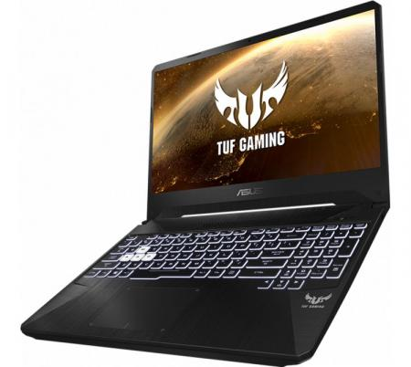

Cashutech - Notebook Gamer ASUS TUF FX505 15.6" Core i5 9300H GTX 1650 8GB 1TB HDD US Win 10

Precio: $130000
Características:
• Procesador: Intel Core i5-9300H (caché de 8 M, hasta 4,10 GHz)
• Sistema Operativo: Windows 10 Home 64bits
• Pantalla: 15.6" FHD 1920x1080 16:9 IPS
• Webcam: Cámara 720P HD
• Gráfica: NVIDIA GeForce GTX 1650 4GB DDR5
• Disco Duro: 1TB
• Memoria Ram: DDR4 8GB
• Audio: Audio Tech DTS
• Unidad Óptica: No incluye
• Lector Tarjetas: No aplica
• Teclado: Retroiluminado RGB Chiclet
• Dispositivos de Comunicaciones
• LAN: 10/100/1000 Mbps
• WiFi: 802.11ac
• Bluetooth: 5.0 Dual Band
• Puertos de Conexión:
1 x USB 2.0
2 x USB 3.2
1 x HDMI 2.0
1 x Combo Audio Jack